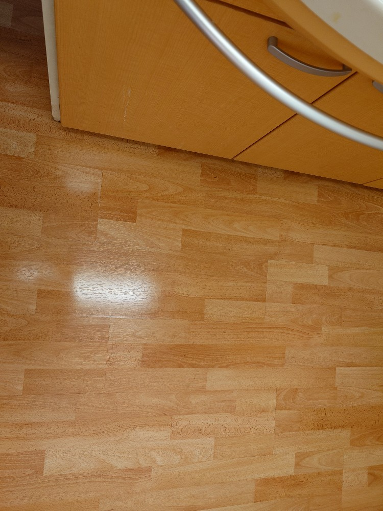
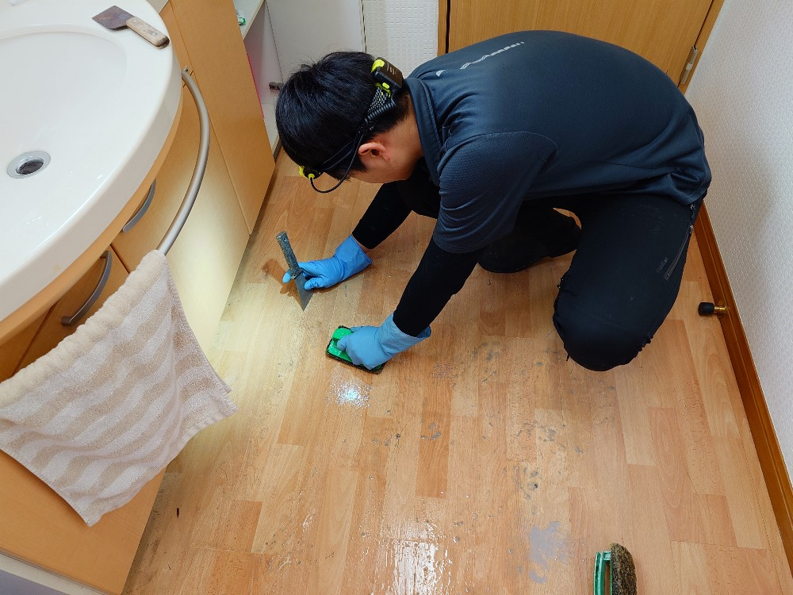
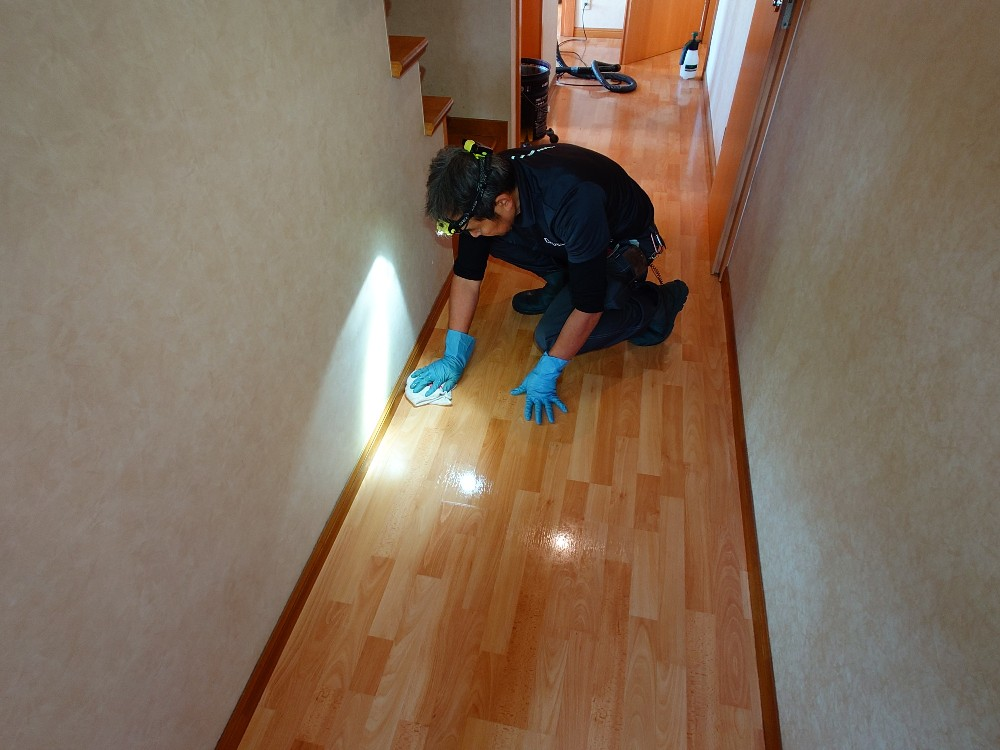
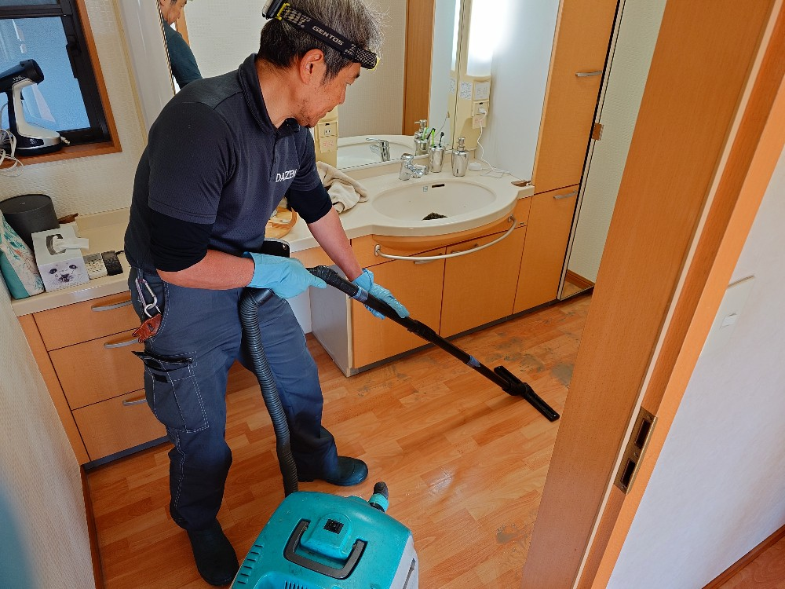
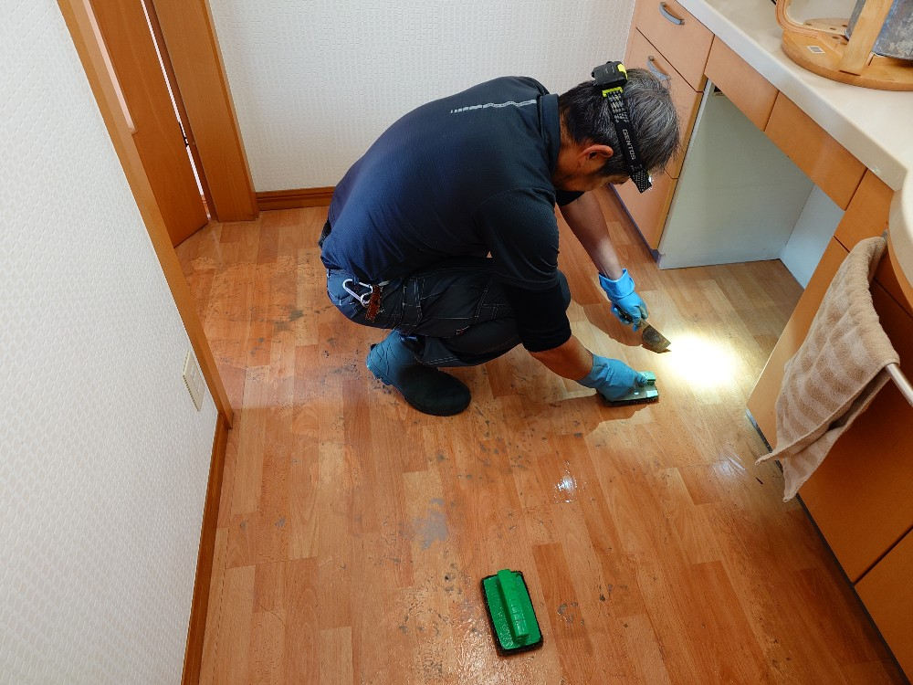
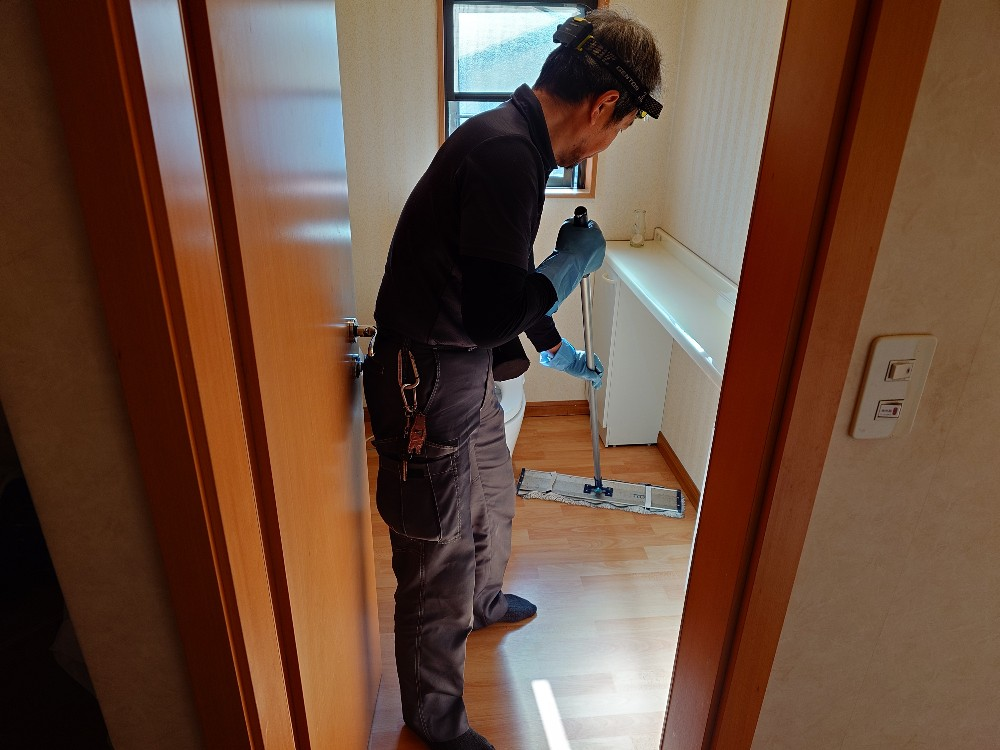
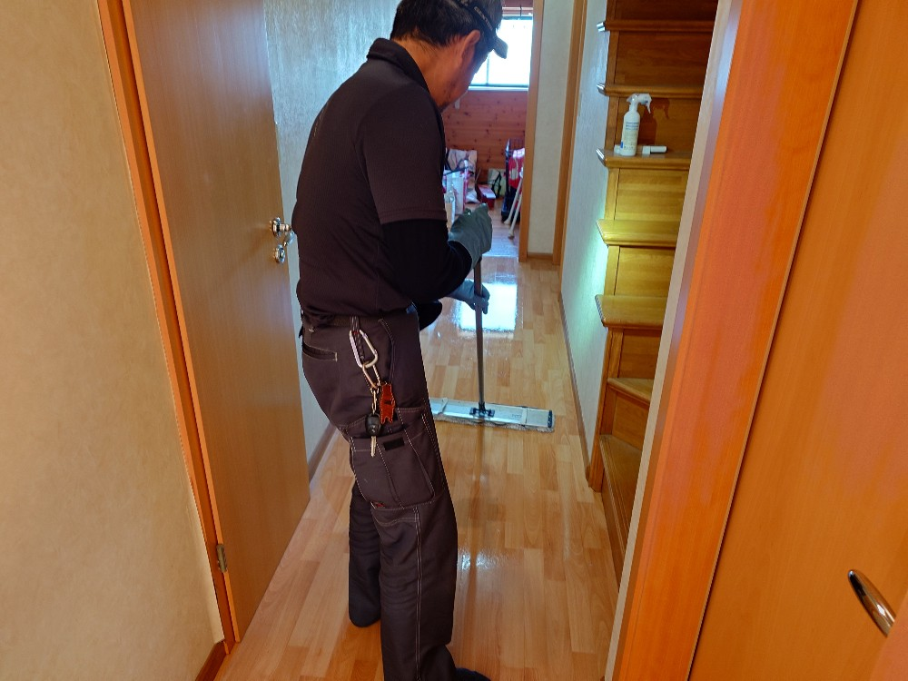
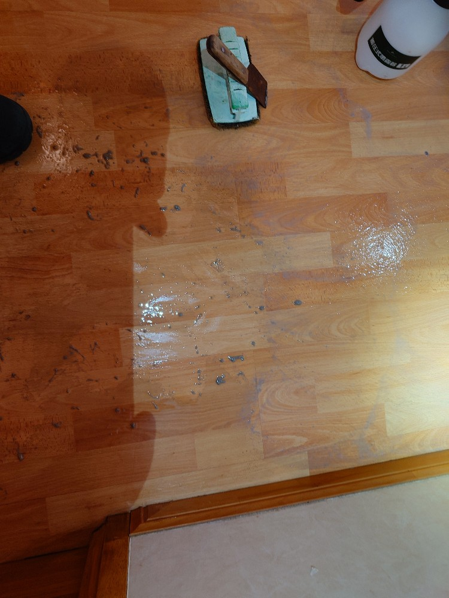
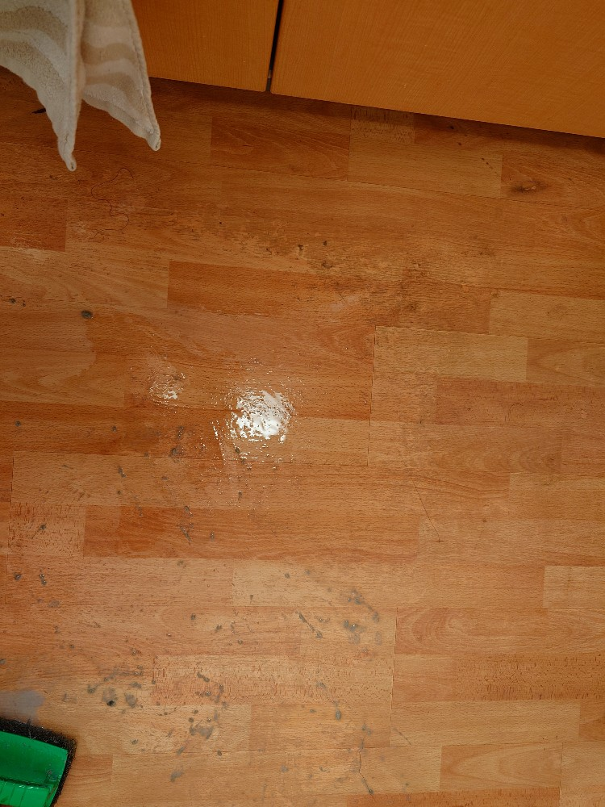

千葉県松戸市Ｏ様ご自宅の廊下、お手洗い、洗面の剥離洗浄クリーニングワックス仕上げをしました!

千葉県松戸市Ｏ様ご自宅の剥離洗浄クリーニングワックス仕上げをしました!Ｏ様ご自宅のリビング、キッチンダイニングの床面剥離洗浄クリーニングワックス仕上げを昨年末に実施しました。今回は（それら）綺麗になった床面を更に延長して、廊下、洗面、お手洗いの床面剥離洗浄クリーニングワックス仕上げのリクエストを頂きました、心より感謝します!DAIZENプロフェッショナルクリーニングメソッドを駆使して、床面の堆積汚れ、黒ずんだ堆積旧ワックスを剥離剤で溶かしていきます。今回は床面が細いエリア、屈折したエリア、扉周りが多いターゲットなのでハンドパッドを使って手作業で丁寧に少しづつ、余すことなく剥離クリーニングしていきます。時間は掛かりますが手作業でしっかり堆積汚れが除去出来ました!完全に汚れをリムーブしてから、こちらも丁寧にワックス掛けして輝かせていきます。とても気持ちよく綺麗な床面が完成しました!ぜひDAIZENの床面剥離洗浄クリーニングワックス仕上げをご体験下さい!








